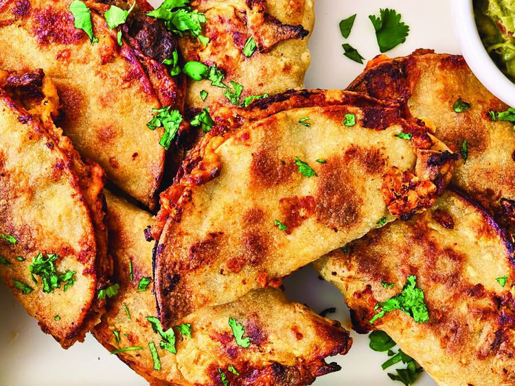

Home
Sheet Pan Tacos Recipe

Ingredients:
- 2 tablespoons olive oil, plus more if needed
- 1 pound ground beef
- ¼ cup finely chopped onion
- 4 ounces diced green chiles
- 1 teaspoon chili powder
- ½ teaspoon ground cumin
- ¼ teaspoon garlic powder
- ¾ teaspoon kosher salt
- 10 corn tortillas
- 1 cup refried beans (optional)
- 1 cup shredded Cheddar cheese
- toppings: cilantro, sour cream, salsa, guacamole or hot sauce (optional)
Instructions:
- Preheat the oven to 425 degrees F (220 degrees C). Line a rimmed baking sheet with foil or parchment paper and lightly coat with 1 tablespoon olive oil.
- Combine beef, onion, green chiles, chili powder, cumin, garlic powder, and salt in a medium bowl and mix until well incorporated.
- Wrap tortillas in a damp paper towel and microwave just until softened, about 30 seconds.
- Spread about 3 tablespoons beef mixture over half of a tortilla in a very thin layer that reaches to the edges. Spread about 1 tablespoon beans onto the other half. Sprinkle all over with about 2 tablespoons cheese. Fold tortilla in half to make a taco; place on prepared baking sheet. Repeat with remaining tortillas, meat, and cheese. Brush tops of tacos with remaining oil.
- Bake tacos in the preheated oven, flipping halfway through, until lightly browned, toasted, and crisp around the edges, 30 to 35 minutes. Serve with desired toppings.